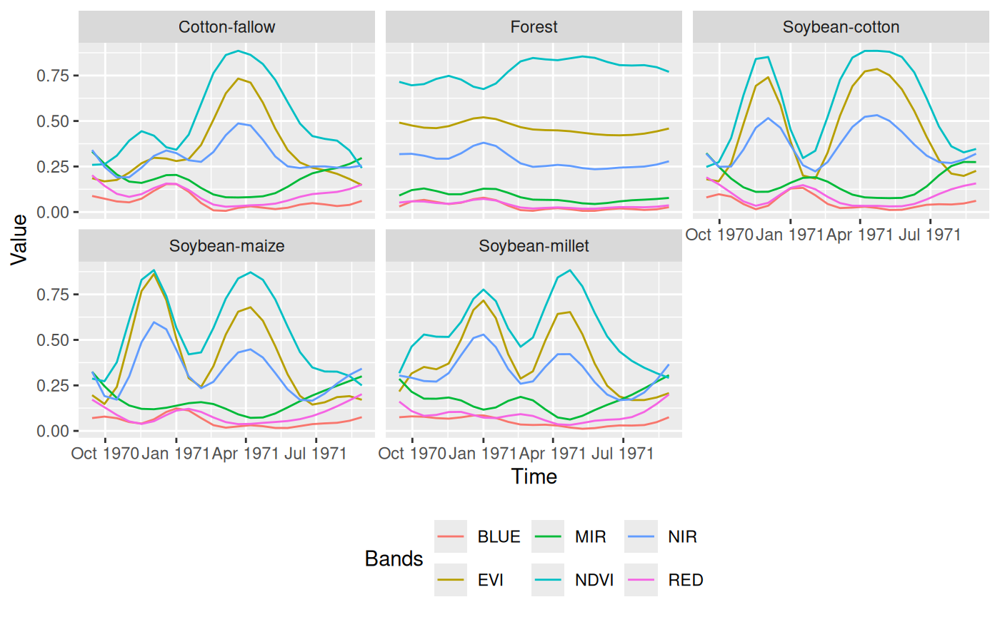
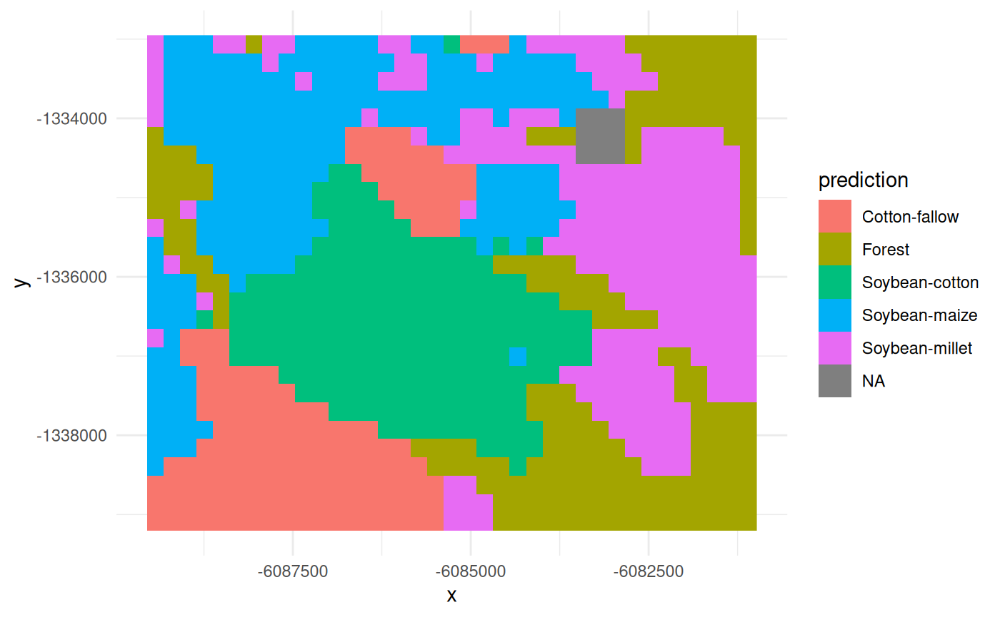

1. Land use mapping using TWDTW-KNN and stars
Victor Maus
Source:vignettes/landuse-mapping.Rmd
landuse-mapping.RmdThis vignette offers a concise guide for using the
dtwSat package to generate a land-use map. The package
utilizes Time-Weighted Dynamic Time Warping (TWDTW) along with a
k-nearest neighbour (KNN) classifier, by default with the nearest
neighbour. The subsequent sections will walk you through the process of
creating a land-use map based on a set of training samples and a
multi-band satellite image time series.
Reading Training Samples
First, let’s read a set of training samples that come with the
dtwSat package installation.
library(dtwSat)
samples <- st_read(system.file("mato_grosso_brazil/samples.gpkg", package = "dtwSat"), quiet = TRUE)Each sample is a point with a land-use label and the
start_date and end_date of the period in which
the label is valid. To train the model, dtwSat uses for
each sample only the satellite images acquired within this period.
Preparing the Satellite Image Time Series
The dtwSat package supports satellite images read into R
using the stars package. The installation comes with a set
of MOD13Q1 images for a region within the Brazilian Amazon. Note that
timing is crucial for the TWDTW distance metric. To create a consistent
image time series, we start by extracting the date of acquisition from
the MODIS file names (Didan 2015).
tif_files <- dir(system.file("mato_grosso_brazil", package = "dtwSat"), pattern = "\\.tif$", full.names = TRUE)
# use the file names only, the path to the files can contain digits too
tif_names <- basename(tif_files)
acquisition_date <- as.Date(regmatches(tif_names, regexpr("[0-9]{8}", tif_names)), format = "%Y%m%d")
print(acquisition_date)
## [1] "2011-09-14" "2011-09-30" "2011-10-16" "2011-11-01" "2011-11-17"
## [6] "2011-12-03" "2011-12-19" "2012-01-01" "2012-01-17" "2012-02-02"
## [11] "2012-02-18" "2012-03-05" "2012-03-21" "2012-04-06" "2012-04-22"
## [16] "2012-05-08" "2012-05-24" "2012-06-09" "2012-06-25" "2012-07-11"
## [21] "2012-07-27" "2012-08-12" "2012-08-28"Side note: The date in the file name is not the true acquisition date for each pixel. MOD13Q1 is a 16-day composite product, and the date in the file name is the first day of this 16-day period.
With the files and dates in hand, we can construct a stars satellite
image time series for dtwSat.
# read data-cube
dc <- read_stars(tif_files,
along = list(time = acquisition_date),
RasterIO = list(bands = 1:6))
# set band names
dc <- st_set_dimensions(dc, 3, c("EVI", "NDVI", "RED", "BLUE", "NIR", "MIR"))
# convert band dimension to attribute
dc <- split(dc, c("band"))
print(dc)
## stars object with 3 dimensions and 6 attributes
## attribute(s):
## Min. 1st Qu. Median Mean 3rd Qu. Max. NAs NA's
## EVI 0.0636 0.2350 0.3883 0.40567166 0.5367 0.9994 0 0.0636
## NDVI 0.1462 0.3855 0.6099 0.58831591 0.7849 0.9819 0 0.1462
## RED 0.0015 0.0419 0.0692 0.08195341 0.1119 0.4007 0 0.0015
## BLUE 0.0012 0.0216 0.0365 0.04992652 0.0617 0.4174 9 0.0000
## NIR 0.0582 0.2465 0.3024 0.32209612 0.3813 0.7246 0 0.0582
## MIR 0.0276 0.0966 0.1411 0.15764017 0.2104 0.4161 0 0.0276
## dimension(s):
## from to offset delta refsys point
## x 1 37 -6089551 231.7 +proj=sinu +lon_0=0 +x_0=... FALSE
## y 1 27 -1332951 -231.7 +proj=sinu +lon_0=0 +x_0=... FALSE
## time 1 23 NA NA Date NA
## values x/y
## x NULL [x]
## y NULL [y]
## time 2011-09-14,...,2012-08-28Note that it’s important to set the date for each observation using
the parameter along. This will produce a 4D array
(data-cube) that will be collapsed into a 3D array by converting the
‘band’ dimension into attributes. This prepares the data for training
the TWDTW-KNN model.
Creating the TWDTW-KNN Model
There are several ways to build the TWDTW-KNN model. The default
option is to keep all samples as part of the model. However, this
implies a higher computational time for prediction. To speed up the
processing, here I show how to reduce the samples to a single temporal
pattern for each land-use class using Generalized Additive Models (GAM).
That can be achieved by defining a smoothing function with the argument
resampling_fun, such as
library(mgcv)
twdtw_model <- twdtw_knn(x = dc,
y = samples,
resampling_fun = function(data) mgcv::gam(y ~ s(x), data = data),
cycle_length = 'year',
time_scale = 'day',
time_weight = c(steepness = 0.1, midpoint = 50))
print(twdtw_model)
##
## Model of class 'twdtw_knn'
## ----------------------------
## Call:
## twdtw_knn(x = dc, y = samples, time_weight = c(steepness = 0.1, midpoint = 50), cycle_length = "year",
## time_scale = "day", resampling_fun = function(data) mgcv::gam(y ~ s(x), data = data))
##
## Data:
## 5 temporal patterns, one for each label created with 'resampling_fun'
## Bands: EVI, NDVI, RED, BLUE, NIR, MIR
##
## label patterns observations from to
## Cotton-fallow 1 23 1970-09-14 1971-08-29
## Forest 1 23 1970-09-14 1971-08-29
## Soybean-cotton 1 23 1970-09-14 1971-08-29
## Soybean-maize 1 23 1970-09-14 1971-08-29
## Soybean-millet 1 23 1970-09-14 1971-08-29
##
## Root Mean Squared Error (RMSE) of smooth models:
## Cotton-fallow Forest Soybean-cotton Soybean-millet Soybean-maize
## EVI 0.07136100 0.07548927 0.09837789 0.08226513 0.07525433
## NDVI 0.06365170 0.07833016 0.08682990 0.09166950 0.07688487
## RED 0.02652048 0.01965245 0.02423174 0.02349431 0.02919917
## BLUE 0.03433816 0.02759463 0.02846576 0.02259862 0.03894198
## NIR 0.06386263 0.04957903 0.06525658 0.05132751 0.05900557
## MIR 0.03972322 0.03681205 0.03498298 0.04140825 0.03800280
##
## TWDTW Arguments:
## - time_weight: c(steepness=0.1, midpoint=50)
## - cycle_length: year
## - time_scale: day
## - origin: NULL
## - max_elapsed: InfIn addition to the mandatory arguments x (satellite
data-cube) and y (training samples), the TWDTW distance
calculation also requires setting cycle_length,
time_scale, and time_weight. For more details,
refer to the documentation using ?twdtw. The model will
resample the training set using the defined function, collapsing all
samples with the same land-use label into a single temporal pattern.
This reduces computational demands. The temporal patterns of the model
can be visualized as follows:
plot(twdtw_model)
Land Use Prediction
Finally, we predict the land-use classes for each pixel location in the data-cube:
lu_map <- predict(dc, model = twdtw_model)
print(lu_map)
## stars object with 2 dimensions and 2 attributes
## attribute(s):
## prediction distance
## Cotton-fallow :151 Min. :1.867
## Forest :196 1st Qu.:2.615
## Soybean-cotton:202 Median :3.076
## Soybean-maize :219 Mean :3.253
## Soybean-millet:222 3rd Qu.:3.790
## NAs : 9 Max. :5.639
## NAs :9
## dimension(s):
## from to offset delta refsys point x/y
## x 1 37 -6089551 231.7 +proj=sinu +lon_0=0 +x_0=... FALSE [x]
## y 1 27 -1332951 -231.7 +proj=sinu +lon_0=0 +x_0=... FALSE [y]The ‘time’ dimension was reduced to a single map with two attributes:
prediction is the land-use class of each pixel, and
distance is the TWDTW distance to the nearest temporal
pattern. We can now visualize the land-use classes using
ggplot:
ggplot() +
geom_stars(data = lu_map) +
theme_minimal()
Note that some pixels (in a 3x3 box) in the northeast part of the map
have NA values. These pixels have a missing value in the
blue band recorded on 2011-11-17. The call above uses the
predict method of the stars package, which replaces the
missing values with zeros before the prediction and then sets the result
of every pixel that had a missing value to NA. Therefore, a
single missing value is enough for a pixel to have no land-use
class.
TWDTW does not need complete time series. To classify the pixels with missing values using their remaining observations, pass the data-cube to the model:
lu_map <- predict(twdtw_model, newdata = dc)
ggplot() +
geom_stars(data = lu_map) +
theme_minimal()
In this call the observation of 2011-11-17 is not used for the nine pixels, and all pixels have a land-use class.
The land-use classes can then be written to a TIFF file:
write_stars(lu_map["prediction"], "lu_map.tif")Further Reading
This introduction outlined the use of dtwSat for
land-use mapping. For more in-depth information, refer to the papers by
Maus et al. (2016) and Maus et al. (2019) and the twdtw R
package documentation. The help page ?predict.twdtw_knn
describes how to classify with more than one nearest neighbour. Images
that do not fit in memory can be classified as a stars proxy object,
which predict() reads in blocks of rows, see
?twdtw_knn_predict.stars. The second vignette compares the accuracy and the
processing time of TWDTW with random forest and SVM.
For additional details on how to manage input and output satellite
images, check the stars
documentation.